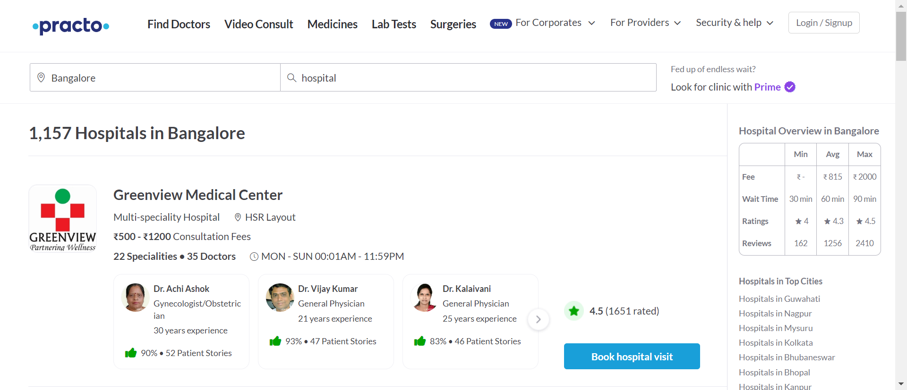
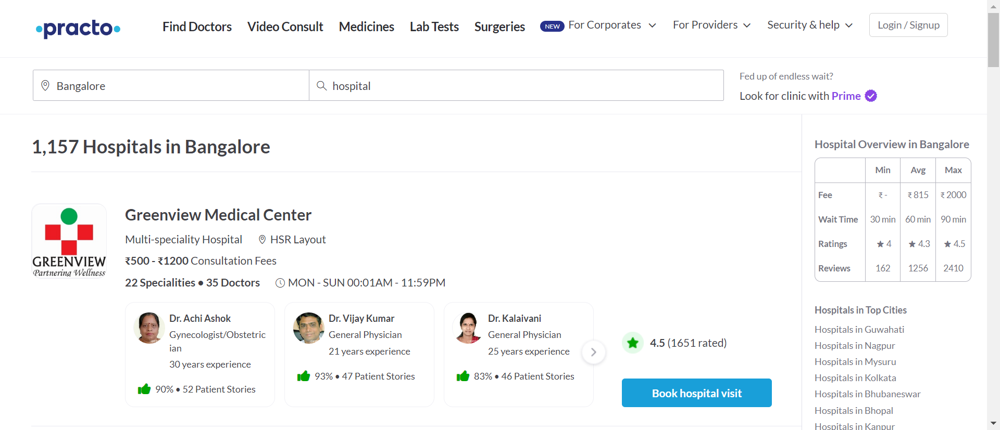

-
Finding Hospital - Practo
5:14:47 pm / 00:00:19:187 Pass
Finding Hospital - Practo
04.24.2024 5:14:47 pm 04.24.2024 5:15:07 pm 00:00:19:187 · #test-id=1PassCapture the hospital name and ratingGiven the user is on Practo Home PagestepDefinition.Hooks.addScreenshot(io.cucumber.java.Scenario)Capture the hospital name and rating When user will select City from the City Input FieldstepDefinition.Hooks.addScreenshot(io.cucumber.java.Scenario)Capture the hospital name and ratingAnd user will select Hospital Type from Type Input FieldstepDefinition.Hooks.addScreenshot(io.cucumber.java.Scenario)Capture the hospital name and ratingThen user will capture the list of Hospital name from ratingstepDefinition.Hooks.addScreenshot(io.cucumber.java.Scenario)Capture the hospital name and rating
When user will select City from the City Input FieldstepDefinition.Hooks.addScreenshot(io.cucumber.java.Scenario)Capture the hospital name and ratingAnd user will select Hospital Type from Type Input FieldstepDefinition.Hooks.addScreenshot(io.cucumber.java.Scenario)Capture the hospital name and ratingThen user will capture the list of Hospital name from ratingstepDefinition.Hooks.addScreenshot(io.cucumber.java.Scenario)Capture the hospital name and rating -
Finding Hospital - Practo
5:15:07 pm / 00:00:06:024 Pass
Finding Hospital - Practo
04.24.2024 5:15:07 pm 04.24.2024 5:15:13 pm 00:00:06:024 · #test-id=11PassGo to Book Diagnostic Test and pick all top cities nameGiven the user is on Practo Home PagestepDefinition.Hooks.addScreenshot(io.cucumber.java.Scenario)Go to Book Diagnostic Test and pick all top cities name When user will select Book Diagnostic TestsstepDefinition.Hooks.addScreenshot(io.cucumber.java.Scenario)Go to Book Diagnostic Test and pick all top cities nameThen user will capture the all top cities namestepDefinition.Hooks.addScreenshot(io.cucumber.java.Scenario)Go to Book Diagnostic Test and pick all top cities name
When user will select Book Diagnostic TestsstepDefinition.Hooks.addScreenshot(io.cucumber.java.Scenario)Go to Book Diagnostic Test and pick all top cities nameThen user will capture the all top cities namestepDefinition.Hooks.addScreenshot(io.cucumber.java.Scenario)Go to Book Diagnostic Test and pick all top cities name
-
Finding Hospital - Practo
5:15:13 pm / 00:00:05:235 Pass
Finding Hospital - Practo
04.24.2024 5:15:13 pm 04.24.2024 5:15:18 pm 00:00:05:235 · #test-id=19PassGo to View All Specialties and print all specialties with priceGiven the user is on Practo Home PagestepDefinition.Hooks.addScreenshot(io.cucumber.java.Scenario)Go to View All Specialties and print all specialties with price When user will select View All SpecialtiesstepDefinition.Hooks.addScreenshot(io.cucumber.java.Scenario)Go to View All Specialties and print all specialties with priceThen user will capture the all specialties with pricestepDefinition.Hooks.addScreenshot(io.cucumber.java.Scenario)Go to View All Specialties and print all specialties with price
When user will select View All SpecialtiesstepDefinition.Hooks.addScreenshot(io.cucumber.java.Scenario)Go to View All Specialties and print all specialties with priceThen user will capture the all specialties with pricestepDefinition.Hooks.addScreenshot(io.cucumber.java.Scenario)Go to View All Specialties and print all specialties with price
-
Finding Hospital - Practo
5:15:18 pm / 00:00:08:432 Pass
Finding Hospital - Practo
04.24.2024 5:15:18 pm 04.24.2024 5:15:26 pm 00:00:08:432 · #test-id=27Passclick on practo drive and enter invalid detailsGiven the user is on Practo Home PagestepDefinition.Hooks.addScreenshot(io.cucumber.java.Scenario)click on practo drive and enter invalid detailsWhen user will select practo drivestepDefinition.Hooks.addScreenshot(io.cucumber.java.Scenario)click on practo drive and enter invalid details Then user will enter invalid details and capture the warning messagestepDefinition.Hooks.addScreenshot(io.cucumber.java.Scenario)click on practo drive and enter invalid details
Then user will enter invalid details and capture the warning messagestepDefinition.Hooks.addScreenshot(io.cucumber.java.Scenario)click on practo drive and enter invalid details
-
Finding Hospital - Practo
5:15:26 pm / 00:00:30:644 Pass
Finding Hospital - Practo
04.24.2024 5:15:26 pm 04.24.2024 5:15:57 pm 00:00:30:644 · #test-id=35PassCheck if Instagram is present under SocialGiven the user is on Practo Home PagestepDefinition.Hooks.addScreenshot(io.cucumber.java.Scenario)Check if Instagram is present under Social When The user scroll down to the social menustepDefinition.Hooks.addScreenshot(io.cucumber.java.Scenario)Check if Instagram is present under SocialThen User check whether Instagram is present in the list of social media platformsstepDefinition.Hooks.addScreenshot(io.cucumber.java.Scenario)Check if Instagram is present under Social
When The user scroll down to the social menustepDefinition.Hooks.addScreenshot(io.cucumber.java.Scenario)Check if Instagram is present under SocialThen User check whether Instagram is present in the list of social media platformsstepDefinition.Hooks.addScreenshot(io.cucumber.java.Scenario)Check if Instagram is present under Social
Started
Apr 24, 2024 05:14:35 pm
Ended
Apr 24, 2024 05:16:00 pm
Features Passed
5
Features Failed
0
Features
Scenarios
Steps
Timeline